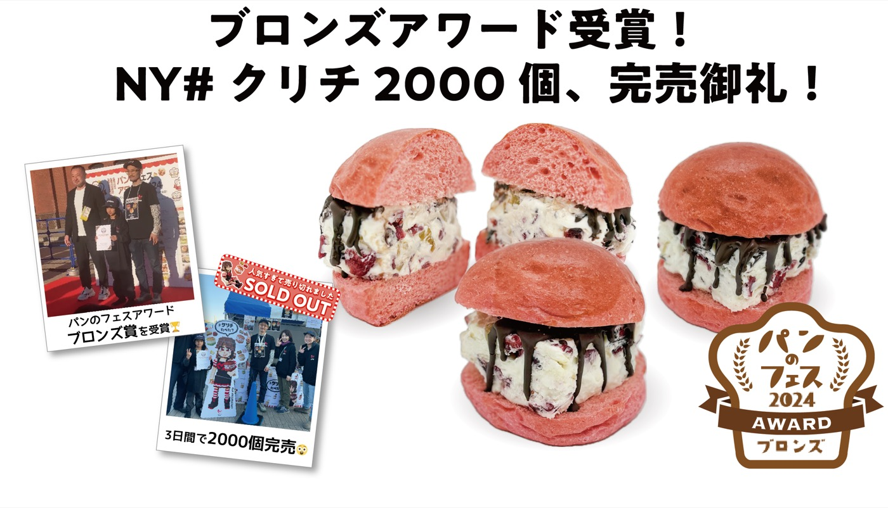

← Press Release 一覧へ
横浜パンのフェス 2026 アワードにて「#クリチ」がシルバー賞を受賞

Vsw株式会社は、2026年3月に横浜赤レンガ倉庫で開催された「横浜パンのフェス 2026」のアワード部門において、弊社のクリームチーズバーガー「#クリチ」がシルバー賞を受賞したことをお知らせいたします。
受賞概要
- 受賞作品：NY#クリチ（チョコ・クランベリー＆ナッツ）
- 賞：横浜パンのフェス 2026 アワード／シルバー賞
- 会場：横浜赤レンガ倉庫イベント広場
- 主催：パンのフェス実行委員会
多くの方の投票と応援に感謝
「横浜パンのフェス」は、日本全国から選りすぐりのベーカリーが集まる、パン好きにとって最大級のお祭りです。アワード部門は来場者の投票と審査員評価をもとに決定される権威ある賞で、今回のシルバー賞受賞は、会場で NY#クリチ を手に取ってくださったお客さま一人ひとりの投票と声援に支えられたものです。
開発にあたっては、ニューヨーク発想の組み合わせ（チョコレート × クランベリー × ナッツ）と、VSW独自の濃厚クリームチーズを、淡いピンクのふわふわなバンズで包み込むスタイルを採用。見た目の華やかさと、ひと口で複数の味が重なる食体験の両立を追求しました。
受賞は私たちにとってゴールではなく、スタート地点です。投票してくださった皆さま、会場で声をかけてくださった皆さま、本当にありがとうございました。次はさらに驚いていただける #クリチ をお届けします。
3日間で約2,000個を販売、完売御礼
開催期間中、NY#クリチ は連日行列の絶えない人気で、3日間で約2,000個を販売して完売となりました。お買い求めいただけなかった皆さまには、心よりお詫び申し上げるとともに、今後の催事・店舗販売・オンラインショップでの提供に向けて準備を進めております。
今後の展開
- 受賞記念ラインナップの オンラインショップ での限定販売
- 関西エリアへの初出店（神戸「てくてくパンまつり」）
- 全国各地のパンフェスへの継続出店
- メタバース空間「KURICHI LAND」での記念イベント開催
最新情報は、公式Instagram および オンラインショップ でご確認いただけます。
本件に関するお問い合わせ
取材・撮影・メディア掲載・法人コラボレーションに関するご相談は、お問い合わせフォーム までお寄せください。